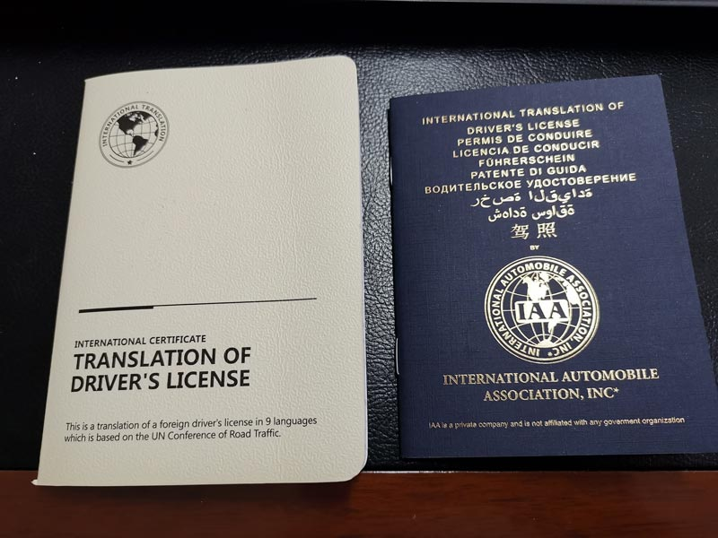

国际驾照就是IDP(International Driving Permit),中国大陆不是这个组织的成员国，因此无法办理国际驾照。但是港澳台的驾照是可以办理国际驾照的，如果中国驾照换香港驾照，也是无法换取香港驾照的国际驾照，必须是香港公民才能办理。所以想办国际驾照的话，只有等着哪天中国加入这个组织或者考个其它国家驾照然后换取。 值得提醒大家的是，用中国驾照更换的所有的国际驾照都是有问题的！因为中国没有加入国际道路公约组织，所以说能够办理国际驾照，又有什么用呢？持有中国驾照并不是在欧洲可以随意租车旅游。 关于国际驾照的使用，每个地方都有每个地方的规定，这也是中国驾照能否在当地使用的最重要的依据，可到当地政府的官网或者中国驻华使馆的官网上查询。 许多人喜欢自驾车旅游或在国外租车自驾。这其中当地法律最为重要，要想在当地真正合法的开车，首先就得遵守当地法律。 跨国家开车申根区是没有国界的，只要在申根区范围内，开到哪儿都无所谓，但是你的驾照能不能在该国合法开车就是另外一个问题了。 你在德国租了车开到法国了，就得遵守法国的法律，如果法国不承认中国驾照，那么你在法国就相当于无照驾车。在匈牙利租了车开到斯洛伐克了，那么斯洛伐克是否承认中国驾照呢。但是出门在外，谁都想多跑跑一些地方，凭借侥幸心理一博，碰到警察后再说，那后果是极为可怕的。其实被懂行的警察查到的概率也是蛮低的，但如果一旦被认真的警察抓着，那么就是刑事犯罪。孰轻孰重，就得自己权衡了。 在国外租车自驾，其实有3个注意事项：当地法律，当地警察，租车公司。其中当地法律最为重要，要想在当地真正合法的开车，首先就得遵守当地法律，当然这个要求往往也是最严的。 最后，当地警察的要求是游动于租车公司的规定和当地法律之间的，这完全取决于他们的心情和他对法律的了解程度。 爱尔兰：根据规定，短期来访者可以用中国驾照到租车公司租车并办理保险，但不能开别人的车。 奥地利：自驾出行需随身携带旅行证件及有效驾照及德文翻译件。 白俄罗斯：白俄罗斯属左驾右行，持国际驾照可在白俄罗斯境内驾驶机动车。 保加利亚：租车时需要出示保加利亚认可的有效身份证件以及保加利亚、欧盟或其它保政府承认的驾驶执照。 比利时：中国内地驾照需事先在国内做好翻译与认证。 冰岛：持有效中国机动车驾照，在冰短期访可在当地驾驶机动车辆，随身备妥驾照英文译文外办认证件。 波黑：中国驾照不能在波黑使用。 丹麦：租用汽车可在机场内预约，须备有国际驾照。 德国：租车需要提供的材料包括中国驾照、国内公证件、外办认证件、德国驻华使领馆再认证件及信用卡。 法国：只有中国在法外交人员和留学生可以使用中国驾照在法自驾车出行，但必须同时携带法居留证、中国驾照的法文译文。 芬兰：中国驾照不能在芬兰使用，需要申请欧盟驾照。 荷兰：持中国驾照者在到达荷之日起185天内可照驾车，超过此期限则必须更换。 黑山：中国驾照在黑山可用。 捷克：中国驾照在捷克不可使用。 克罗地亚：中国驾照可使用6个月。 卢森堡：驾照公证及随身携带旅行证件，。 罗马尼亚：持有效中国驾照者可换罗马尼亚驾照，须驾照的公证和双认证。 马耳他：短期访问者使用国内驾照时，须有有效翻译件。 马其顿：中国驾照入境后可用6个月。 挪威：中国驾照英文公证和认证后，可在挪威使用一年。 葡萄牙：中国驾照不能在当地使用。 瑞典：非欧盟国家驾照需要满足如下条件：驾照真实合法有效，且未曾更换为瑞典驾照；无被没收或吊销瑞典驾照记录；非英语、德语或法语文本的驾照须经翻译公证为英语、德语、法语、瑞典语、丹麦语或挪威语文本共用；无照片驾照需与带照片身份证明文件共同使用。 瑞士：如果在瑞士停留期不超过一年，需和翻译件一起使用。 塞尔维亚：中国的驾照经当地公证处公证，外办处认证，驻华使领馆认证，可申请塞文的驾照。 斯洛伐克：斯洛伐克不承认中国驾照。 斯洛文尼亚：中国驾驶执照需经公证、认证后及当地路考合格后可更换斯洛文尼亚驾驶执照。 乌克兰：中国驾照不能在乌克兰直接使用。 西班牙：驾照外加随身携带旅行证件。 希腊：中国驾照在当地不被承认。 匈牙利：据2019年政策，在匈牙利居住未满一年的外国人，可以持中国驾照到国家指定翻译局，做翻译件认证之后可使用半年。 意大利：意大利不承认中国驾照。